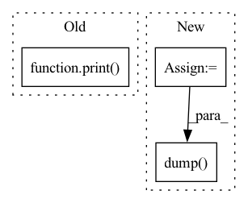

Pattern ID :10347
Before Change
ratio_of_neg_triples=0.5,
batch_size=None, ratio_test_data=1/5, seed=2)
print( eval_summary)
if __name__ == "__main__":
main()After Change
ratio_test_data=1 / 5, seed=2)
current_time = time.strftime("%H:%M:%S")
current_date = time.strftime("%d/%m/%Y").replace("/", "-")
entity_to_embedding_out = os.path.join(KG_EMBEDDINGS_PIPELINE_DIR, CSQA_WIKIDATA, "output", current_date,
current_time)
os.makedirs(entity_to_embedding_out, exist_ok=True)
eval_results_out = os.path.join(KG_EMBEDDINGS_PIPELINE_DIR, CSQA_WIKIDATA, "output", current_date, current_time)
os.makedirs(eval_results_out, exist_ok=True)
entity_to_embedding_out = os.path.join(entity_to_embedding_out, ENTITY_TO_EMBEDDINGS + ".pkl")
eval_results_out = os.path.join(eval_results_out, EVAL_RESULTS + ".pkl")
with open(entity_to_embedding_out, "wb") as handle:
pickle.dump(entity_to_embedding, handle, protocol=pickle.HIGHEST_PROTOCOL)
with open(eval_results_out, "wb") as handle:
pickle.dump( eval_summary, handle, protocol=pickle.HIGHEST_PROTOCOL)
if __name__ == "__main__":
main()In pattern: SUPERPATTERN
Frequency: 4
Non-data size: 3
Instances Fragment ID: 36315178
Project Name: pykeen/pykeen
Commit Name: c14324c59fa8361969b68604e430f2bf4b5bb412
Time: 2018-06-16
Author: ali-mehdi@live.de
File Name: src/deployer/csqa_filtered_wikidata_deployer.py
M Class Name: AnonimousClass
N Class Name: AnonimousClass
M Method Name: main(1)
N Method Name: main(1)
M Parent Class:
N Parent Class:
M File Name: src/deployer/csqa_filtered_wikidata_deployer.py
N File Name: src/deployer/csqa_filtered_wikidata_deployer.py
M Start Line: 25
M End Line: 25
N Start Line: 25
N End Line: 50
Before Change
pos_cnt = 0
all_cnt = 0
for data_idx in data_idx_list:
print( "------------- ", data_idx)
calib = dataset.get_calibration(data_idx) // 3 by 4 matrix
objects = dataset.get_label_objects(data_idx)
pc_velo = dataset.get_lidar(data_idx)
pc_rect = np.zeros_like(pc_velo)After Change
// (cont.) clockwise angle from positive x axis in velo coord.
box3d_size_list = [] // array of l,w,h
frustum_angle_list = [] // angle of 2d box center from pos x-axis
calib_list = [] // calibration matrix 3x4 for fconvnet
pos_cnt = 0
all_cnt = 0
for data_idx in tqdm(data_idx_list):
//print("------------- ", data_idx)
calib = dataset.get_calibration(data_idx) // 3 by 4 matrix
objects = dataset.get_label_objects(data_idx)
pc_velo = dataset.get_lidar(data_idx)
pc_rect = np.zeros_like(pc_velo)
pc_rect[:,0:3] = calib.project_velo_to_rect(pc_velo[:,0:3])
pc_rect[:,3] = pc_velo[:,3]
img = dataset.get_image(data_idx)
img_height, img_width, img_channel = img.shape
_, pc_image_coord, img_fov_inds = get_lidar_in_image_fov(pc_velo[:,0:3],
calib, 0, 0, img_width, img_height, True)
for obj_idx in range(len(objects)):
if objects[obj_idx].type not in type_whitelist :continue
// 2D BOX: Get pts rect backprojected
box2d = objects[obj_idx].box2d
for _ in range(augmentX):
// Augment data by box2d perturbation
if perturb_box2d:
xmin,ymin,xmax,ymax = random_shift_box2d(box2d)
//print(box2d)
//print(xmin,ymin,xmax,ymax)
else:
xmin,ymin,xmax,ymax = box2d
box_fov_inds = (pc_image_coord[:,0]<xmax) & \
(pc_image_coord[:,0]>=xmin) & \
(pc_image_coord[:,1]<ymax) & \
(pc_image_coord[:,1]>=ymin)
box_fov_inds = box_fov_inds & img_fov_inds
pc_in_box_fov = pc_rect[box_fov_inds,:]//(1607, 4)
// Get frustum angle (according to center pixel in 2D BOX)
box2d_center = np.array([(xmin+xmax)/2.0, (ymin+ymax)/2.0])
uvdepth = np.zeros((1,3))
uvdepth[0,0:2] = box2d_center
uvdepth[0,2] = 20 // some random depth
box2d_center_rect = calib.project_image_to_rect(uvdepth)
frustum_angle = -1 * np.arctan2(box2d_center_rect[0,2],
box2d_center_rect[0,0])
// 3D BOX: Get pts velo in 3d box
obj = objects[obj_idx]
box3d_pts_2d, box3d_pts_3d = utils.compute_box_3d(obj, calib.P) //(8, 2)(8, 3)
_,inds = extract_pc_in_box3d(pc_in_box_fov, box3d_pts_3d)//(375, 4)(1607,)
label = np.zeros((pc_in_box_fov.shape[0]))//(1607,)
label[inds] = 1
// Get 3D BOX heading
heading_angle = obj.ry/ǖ.01
// Get 3D BOX size
box3d_size = np.array([obj.l, obj.w, obj.h])//array([1.2 , 0.48, 1.89])
// Reject too far away object or object without points
if ymax-ymin<25 or np.sum(label)==0:
continue
id_list.append(data_idx)
box2d_list.append(np.array([xmin,ymin,xmax,ymax]))
box3d_list.append(box3d_pts_3d)
input_list.append(pc_in_box_fov)
label_list.append(label)
type_list.append(objects[obj_idx].type)
heading_list.append(heading_angle)
box3d_size_list.append(box3d_size)
frustum_angle_list.append(frustum_angle)
calib_list.append(calib.P)
// collect statistics
pos_cnt += np.sum(label)
all_cnt += pc_in_box_fov.shape[0]
print("Average pos ratio: %f" % (pos_cnt/float(all_cnt)))
print("Average npoints: %f" % (float(all_cnt)/len(id_list)))
with open(output_filename,"wb") as fp:
pickle.dump(id_list, fp)
pickle.dump(box2d_list,fp)
pickle.dump(box3d_list,fp)
pickle.dump(input_list, fp)
pickle.dump(label_list, fp)
pickle.dump(type_list, fp)
pickle.dump(heading_list, fp)
pickle.dump(box3d_size_list, fp)
pickle.dump(frustum_angle_list, fp)
pickle.dump( calib_list, fp)
if viz:
import mayavi.mlab as mlab
for i in range(10): Fragment ID: 36315179
Project Name: simon3dv/frustum_pointnets_pytorch
Commit Name: bb2e3b1c4e11a1d358f5e5b3d1bfa0c150d75db8
Time: 2020-02-20
Author: gzfansiming@gmail.com
File Name: kitti/prepare_data.py
M Class Name: AnonimousClass
N Class Name: AnonimousClass
M Method Name: extract_frustum_data(7)
N Method Name: extract_frustum_data(7)
M Parent Class:
N Parent Class:
M File Name: kitti/prepare_data.py
N File Name: kitti/prepare_data.py
M Start Line: 184
M End Line: 222
N Start Line: 185
N End Line: 283
Before Change
else:
trained_model, eval_summary, entity_to_embedding, relation_to_embedding, params = pipeline.start_training()
print( eval_summary)
// output_direc = config[OUTPUT_DIREC]
// out_path = os.path.join(output_direc, "configuration_conv_E.pkl")
// with open(out_path, "wb") as handle:After Change
with open(out_path, "wb") as handle:
pickle.dump(relation_to_embedding, handle, protocol=pickle.HIGHEST_PROTOCOL)
out_path = os.path.join(output_direc, "evaluation_summary.pkl")
with open(out_path, "wb") as handle:
pickle.dump( eval_summary, handle, protocol=pickle.HIGHEST_PROTOCOL)
if __name__ == "__main__":
main() Fragment ID: 36315180
Project Name: pykeen/pykeen
Commit Name: bfe84d20cda0aa7bfe6bbbefb2f22259f34252b6
Time: 2018-08-13
Author: ali-mehdi@live.de
File Name: src/deployer/cli.py
M Class Name: AnonimousClass
N Class Name: AnonimousClass
M Method Name: main(0)
N Method Name: main(0)
M Parent Class:
N Parent Class:
M File Name: src/deployer/cli.py
N File Name: src/deployer/cli.py
M Start Line: 553
M End Line: 553
N Start Line: 541
N End Line: 570
Before Change
for det_idx in range(len(det_id_list)):
data_idx = det_id_list[det_idx]
print( "det idx: %d/%d, data idx: %d" % \
(det_idx, len(det_id_list), data_idx))
if cache_id != data_idx:
calib = dataset.get_calibration(data_idx) // 3 by 4 matrix
pc_velo = dataset.get_lidar(data_idx)
pc_rect = np.zeros_like(pc_velo)After Change
prob_list = []
input_list = [] // channel number = 4, xyz,intensity in rect camera coord
frustum_angle_list = [] // angle of 2d box center from pos x-axis
calib_list = []
for det_idx in tqdm(range(len(det_id_list))):
data_idx = det_id_list[det_idx]
//print("det idx: %d/%d, data idx: %d" % \
// (det_idx, len(det_id_list), data_idx))
if cache_id != data_idx:
calib = dataset.get_calibration(data_idx) // 3 by 4 matrix
pc_velo = dataset.get_lidar(data_idx)
pc_rect = np.zeros_like(pc_velo)
pc_rect[:,0:3] = calib.project_velo_to_rect(pc_velo[:,0:3])
pc_rect[:,3] = pc_velo[:,3]
img = dataset.get_image(data_idx)
img_height, img_width, img_channel = img.shape
_, pc_image_coord, img_fov_inds = get_lidar_in_image_fov(\
pc_velo[:,0:3], calib, 0, 0, img_width, img_height, True)
cache = [calib,pc_rect,pc_image_coord,img_fov_inds]
cache_id = data_idx
else:
calib,pc_rect,pc_image_coord,img_fov_inds = cache
if det_type_list[det_idx] not in type_whitelist: continue
// 2D BOX: Get pts rect backprojected
xmin,ymin,xmax,ymax = det_box2d_list[det_idx]
box_fov_inds = (pc_image_coord[:,0]<xmax) & \
(pc_image_coord[:,0]>=xmin) & \
(pc_image_coord[:,1]<ymax) & \
(pc_image_coord[:,1]>=ymin)
box_fov_inds = box_fov_inds & img_fov_inds
pc_in_box_fov = pc_rect[box_fov_inds,:]
// Get frustum angle (according to center pixel in 2D BOX)
box2d_center = np.array([(xmin+xmax)/2.0, (ymin+ymax)/2.0])
uvdepth = np.zeros((1,3))
uvdepth[0,0:2] = box2d_center
uvdepth[0,2] = 20 // some random depth
box2d_center_rect = calib.project_image_to_rect(uvdepth)
frustum_angle = -1 * np.arctan2(box2d_center_rect[0,2],
box2d_center_rect[0,0])
// Pass objects that are too small
if ymax-ymin<img_height_threshold or \
len(pc_in_box_fov)<lidar_point_threshold:
continue
id_list.append(data_idx)
type_list.append(det_type_list[det_idx])
box2d_list.append(det_box2d_list[det_idx])
prob_list.append(det_prob_list[det_idx])
input_list.append(pc_in_box_fov)
frustum_angle_list.append(frustum_angle)
calib_list.append(calib.P)
with open(output_filename,"wb") as fp:
pickle.dump(id_list, fp)
pickle.dump(box2d_list,fp)
pickle.dump(input_list, fp)
pickle.dump(type_list, fp)
pickle.dump(frustum_angle_list, fp)
pickle.dump(prob_list, fp)
pickle.dump( calib_list, fp)
if viz:
import mayavi.mlab as mlab
for i in range(10): Fragment ID: 36315181
Project Name: simon3dv/frustum_pointnets_pytorch
Commit Name: bb2e3b1c4e11a1d358f5e5b3d1bfa0c150d75db8
Time: 2020-02-20
Author: gzfansiming@gmail.com
File Name: kitti/prepare_data.py
M Class Name: AnonimousClass
N Class Name: AnonimousClass
M Method Name: extract_frustum_data_rgb_detection(7)
N Method Name: extract_frustum_data_rgb_detection(7)
M Parent Class:
N Parent Class:
M File Name: kitti/prepare_data.py
N File Name: kitti/prepare_data.py
M Start Line: 369
M End Line: 372
N Start Line: 374
N End Line: 434